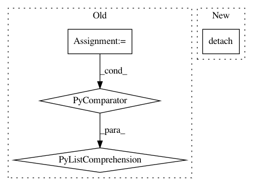

f6532b3c4c329e6d5d5fb846acc441df47616c4c,torch_geometric/nn/models/gnn_explainer.py,GNNExplainer,explain_node,#GNNExplainer#Any#Any#Any#,51
Before Change
node_feat_masks = self.node_feat_masks
node_feat_masks = [mask.detach().sigmoid() for mask in node_feat_masks]
edge_masks = [mask.detach().sigmoid() for mask in self.edge_masks]
self.__clear_masks__()
return node_feat_masks[0], edge_masks
After Change
loss.backward()
optimizer.step()
node_feat_mask = self.node_feat_mask.detach().sigmoid()
edge_mask = self.edge_mask.new_zeros(num_edges)
edge_mask[hard_edge_mask] = self.edge_mask.detach().sigmoid()
In pattern: SUPERPATTERN
Frequency: 3
Non-data size: 4
Instances
Project Name: rusty1s/pytorch_geometric
Commit Name: f6532b3c4c329e6d5d5fb846acc441df47616c4c
Time: 2020-03-22
Author: matthias.fey@tu-dortmund.de
File Name: torch_geometric/nn/models/gnn_explainer.py
Class Name: GNNExplainer
Method Name: explain_node
Project Name: cornellius-gp/gpytorch
Commit Name: 31804a4b46fca8a11e23e22b7d82d10e6cabf582
Time: 2019-01-02
Author: gpleiss@gmail.com
File Name: gpytorch/lazy/cached_cg_lazy_tensor.py
Class Name: CachedCGLazyTensor
Method Name: __init__
Project Name: tyarkoni/pliers
Commit Name: 9f53f2e790fba4a4411224e6255748a45099083a
Time: 2021-01-05
Author: rbrrcc@gmail.com
File Name: pliers/extractors/text.py
Class Name: BertSequenceEncodingExtractor
Method Name: _postprocess